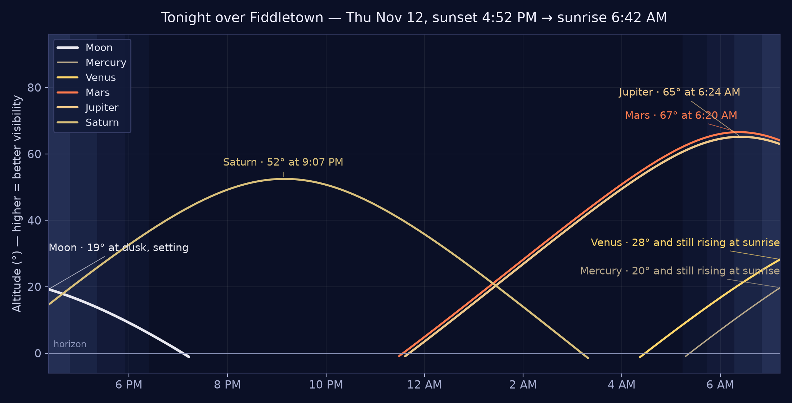
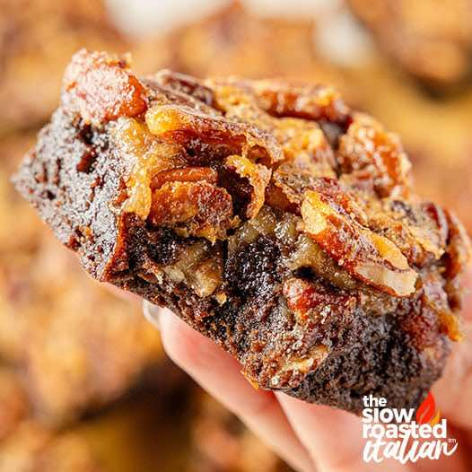
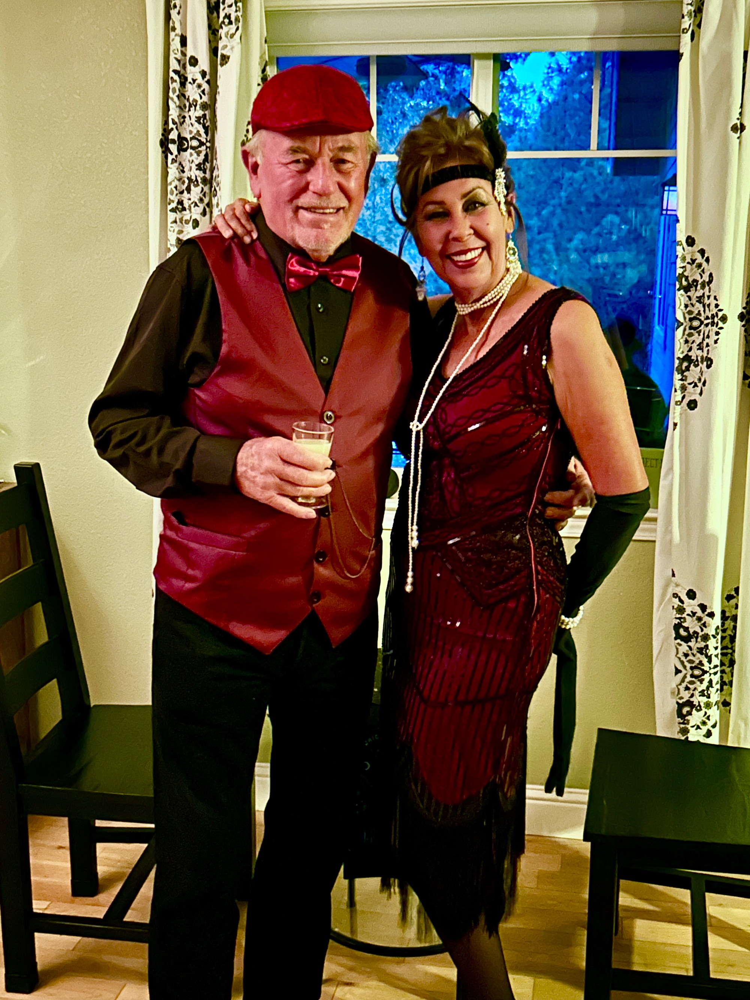

9:00 AM
Amador Water Agency Board of Directors — CANCELLED
📍 Amador Water Agency office, 12800 Ridge Road, Sutter Creek
The agency board’s regular second-Thursday meeting is listed CANCELLED — do not make the trip to Sutter Creek this morning.
Thursday, November 12, 2026 · Morning Edition — published 6:08 AM PT
Thursday, November 12 — the foothills get one more fair day before the weather turns. Today runs sunny, high near 74°; no NWS alerts are in effect, and the county roads are clear at the morning check — the full report is in the Safety Wire. Two prescribed burns are posted for today — Dew Drop Station 10 in Pioneer (about 9:00 AM–3:00 PM) and Shake Omo southeast of Omo Ranch — so smoke on the ridge is planned smoke (see the Safety Wire). The day’s calendar is a civic split: the Amador Water Agency board and the Plymouth City Council are both listed cancelled, while the evening belongs to Open Mic — Second Thursdays at Feist Wines in Drytown, 6:00–9:00 PM (see Today in the Foothills). Tonight is partly cloudy, low near 51°, with the first rain arriving after 4:00 AM; Friday brings showers and thunderstorms, a 100% chance of precipitation, and gusts to 38 mph. Overhead tonight, while the sky holds: Saturn high in the south and the Taurids on the tail of their peak (see the Star Chart).
Roads — clear across the beat at the morning check. The CHP’s live CAD Traffic board (Stockton center), read at 6:03 AM, showed 4 incidents — all of them in the Stockton area (collisions on SR-120 and Airport Way, a fatality on I-5 at Hammer Ln), and none in Amador County or the foothills: nothing on SR-49, SR-16, SR-88, SR-104, or SR-124. Caltrans (checked 6:02–6:03 AM) reports no closures, no chain control, and no restrictions in Amador County — SR-16 and SR-4 each read “no traffic restrictions are reported,” and the only SR-49/SR-88 entries are nighttime one-way controlled traffic outside the county (Modesto, Grass Valley, Stockton).
Weather — no alerts in effect; the week’s storm arrives overnight and lands Friday. No NWS alerts are in effect for the Fiddletown area — no warnings, watches, or advisories (checked 6:00 AM). Today is sunny, high near 74°; tonight turns partly cloudy, low around 51°, with a chance of rain after 4:00 AM (30%). Friday: showers and thunderstorms, chance of precipitation 100%, south wind 9–18 mph with gusts to 38 mph, temperatures falling to around 51° in the afternoon; Friday night brings steady rain, low around 43°. If you have Friday errands on the ridge roads, today is the day to run them (see Weather, below, and the five-day panel above).
Fire — no wildfire in the county; two prescribed burns are posted for today, so ridge smoke is planned smoke. CAL FIRE’s Amador-El Dorado Unit, with the U.S. Forest Service, runs a roughly 7-acre prescribed burn at Dew Drop Station 10 in Pioneer today, about 9:00 AM–3:00 PM — smoke will be visible and should not be reported as a wildfire — and the 6-acre Shake Omo burn is scheduled southeast of Omo Ranch. No active fire incidents or evacuations in Amador County are reported this morning. Yesterday’s Jose and Foster Meadow burns still carry no update confirming ignition. Burn-day status: the paper does not state it — the recorded Burn Day Line (updated daily 4–5 PM) is the authority; call before lighting any outdoor fire.
📍 Amador Water Agency office, 12800 Ridge Road, Sutter Creek
The agency board’s regular second-Thursday meeting is listed CANCELLED — do not make the trip to Sutter Creek this morning.
📍 Jackson Branch Library, Jackson
The library’s standing Thursday story hour for preschoolers — stories and songs in the children’s corner. Free.
📍 Rail Explorers depot, 702 Hunter Lane, Ione
Pedal-powered railbike excursions on the historic Amador Central out of Ione — an eight-mile round trip through the foothills, and today is the fair day to ride before Friday’s rain. Book ahead; check-in at the depot.
📍 Jackson
The county’s Technical Advisory Committee sits this afternoon in Jackson. Public meeting.
📍 Feist Wines @ The Drytown Social Club, 15950 Highway 49, Drytown
The month’s second-Thursday open mic at Feist Wines — musicians and music lovers of all ages, in the Drytown Social Club room. The events desk’s own listing carried the date with no time; the 6:00–9:00 PM hours are the Visit Amador calendar’s.
📍 Plymouth City Hall, 9426 Main St, Plymouth
Tonight’s regular council meeting at City Hall is cancelled by the organizer, per this morning’s calendar — the council’s next sitting is the special meeting Monday, Nov 16 (see the Community Wire).
Today, Thu Nov 12 — the last fair day: Story Time in Jackson 10:30 AM, railbikes out of Ione, the Technical Advisory Committee at 5:00 PM, and Open Mic at Feist Wines in Drytown, 6:00–9:00 PM (cards above); the water agency board and Plymouth City Council are both cancelled. Two prescribed burns may put smoke up (see the Safety Wire). Sunny near 74°; rain chances arrive after 4:00 AM overnight.
Fri Nov 13 — a full Friday, in the rain: Zinfandel Flight Weekend begins at Bella Grace Vineyards (Plymouth wine cave and Sutter Creek tasting room, Nov 13–15): the Estate, Old Vine, and Private Selection Zinfandels poured side by side; 3:00–8:00 PM — Pizza Festa at Domenico Winery, Ione; 5:00–7:30 PM — La Mesa “Big Brain” Trivia Night, 59 Main Street, Sutter Creek; 7:00 PM — Max Gomez at Feist Wines’ Drytown Social Club, 15950 Highway 49, Drytown ($22); and 7:00 PM — Stories From Amador County, a live storytelling night in Volcano (doors 6:30 PM — see the Community Wire). The Hangtown 100 opens at Placerville Speedway (see Car Shows). Showers and thunderstorms.
Sat Nov 14 — a full Saturday: Amador Cellars’ 22nd Anniversary in the Barn (11:00 AM–3:00 PM, live music by 4Thought) and Spend Time in the Vineyard (vineyard tour + wreath-making, 11:00 AM–3:00 PM); Freedom Heartsong at Feist Wines, Drytown; the HorseSpeak Casino Night at 5:00 PM (dinner tickets closed Nov 9); a Corvette cruise into Plymouth (see Car Shows); and the Thanksgiving Pot Luck at the Fiddletown Community Center (doors 5 PM, dinner 6 PM — in its own section below). Mostly sunny after the storm.
Sun Nov 15 — markets, chowder, and a deadline: the Volcano Farmers Market (9:00 AM–12:00 PM), the Old Sutter Creek Flea Market (6:00 AM–2:00 PM, Italian Picnic Grounds), the Chowder Chomp cookoff in Volcano (12:00–3:00 PM, $10 at the door), Blue Stone Pizza at the Bella Grace cave, and Vino Noceto’s Holiday Sip & Paint (11:30 AM–1:00 PM, Plymouth). The Brockman Mill Fire Wise tally is due today (see the Community Wire). Rain chances return late in the day.
Mon Nov 16 — two councils, two decisions: Plymouth City Council special meeting, 6:30 PM — public hearings on the ARCO station project and the Excite Energy solar-and-storage proposal (see the Community Wire); Sutter Creek City Council, 6:00 PM — votes on the employment agreement for the city’s next city manager (see the Community Wire). Rain likely.
🏛️ Fiddletown Community Center
Under the Big Fiddle
Home of the giant fiddle on the roof — and of half the town's calendar. fiddletowncc.org →
Two dates to circle at the hall this month — both came in on flyers from the Center, via Nan. Next up is Saturday's Thanksgiving Pot Luck:
Turkey, ham & gravy provided; bring a side or dessert. Raffle of 25+ items.
Free dance instruction 6:15–7 PM (Dave and Alecia West), then the show at 7 PM. $20 advance / $25 door. Questions: Bob Hines · info@fiddletowncc.org.
The judged-show season has wound down for the winter — no Amador County shows are on the public calendars for the weeks ahead — but the standing Saturday meets carry the cold months, and one good cruise rolls into Plymouth this weekend.
Sat Nov 14 — a Corvette cruise rolls into Plymouth. Chrome-bumper Corvettes (1953–1973) stage at 9:00 AM at the Starbucks in El Dorado Hills Town Center and roll at 9:30 — to Driven Cellars in Plymouth, then lunch at Bones Roadhouse in Pleasant Valley, with parking arranged for the group. Showing a qualifying ’Vette? RSVP to Steve by today, Thu Nov 12, via the listing below.
1st & 3rd Saturdays — Amador Cars & Coffee, Raley’s in Jackson. The county’s own standing meet fills the Raley’s lot on CA-49 from 8:00 AM (the calendar listings run it to 10:00) — all years, makes, and models, free and family-friendly. Next meets: Sat Nov 21, Sat Dec 5, and Sat Dec 19, straight off the group’s own flyer.
Every Saturday — Cars & Coffee, Folsom & El Dorado Hills, 7:00–9:30 AM. The foothills’ standing Saturday meet rotates: 1st & 2nd Saturdays at El Dorado Hills Town Center (by the Regal Cinemas), 3rd, 4th & 5th Saturdays at the Palladio in Folsom. So this Sat Nov 14 it’s El Dorado Hills; Sat Nov 21 and 28 it’s Folsom. Free, rain or shine — go early, it winds down by mid-morning.
Saturday mornings — Placerville Cars & Coffee, Hangtown Village Square. The Broadway meet is a foothill regular — the Sat Nov 7 gathering filled the lot with classics, trucks, and muscle. Check the week’s listings before rolling; winter dates can shift with the weather.
Sun Nov 15 — Cars at the Market, Gold River. 9:00–11:00 AM at the Gold River Sunday Market (roll-in at 8:00), just past Folsom on the way down the hill. This month every classic is welcome — prewar coupes to ’70s muscle — and entry is free for cars and spectators alike.
At the track: the Hangtown 100 runs at Placerville Speedway (El Dorado County Fairgrounds) this Fri–Sat Nov 13–14 — USAC national midgets and winged 360 sprint cars, gates 1:00 PM, cars on track at 2:00. Racing, not a show — but it’s the biggest automotive weekend in the foothills this month.
⭐ From our own hills — the desk dug, and says so plainly: the desk dug back to 1848 for a Nov 12 event in Fiddletown or Amador County itself, as the publisher directed: none could be verified — so the gold panel goes to the state’s page, and a golden one it is. Ninety years ago today — Nov 12, 1936 — the San Francisco–Oakland Bay Bridge opened to traffic, at 12:30 PM, with Governor Frank Merriam cutting gold chains across the lanes with an acetylene torch and former President Herbert Hoover looking on. The bridge was conceived in the Gold Rush days themselves — “Emperor” Joshua Norton decreed a bay crossing back in 1872 — and it opened six months before the Golden Gate, ahead of schedule and under budget.
1958 — the first ascent of The Nose (Nov 12). Warren Harding, Wayne Merry and George Whitmore top out on El Capitan in Yosemite, completing the first ascent of its most famous route after 47 days of climbing spread over some eighteen months.
1980 — Voyager 1 flies closest to Saturn (Nov 12) and sends back the first detailed images of its rings — a fair tie to tonight’s sky, where Saturn rides high in the south (see the Star Chart).
Wider page: 1990 Tim Berners-Lee publishes a formal proposal for the World Wide Web (Nov 12).

Tonight’s chart (~8 PM, facing south): Saturn owns the evening again — about 49° up in the south at 8 PM and peaking near 52° around 9:10 PM. The Great Square of Pegasus rides high overhead, Cassiopeia climbs in the northeast, and Taurus — the Taurid radiant — rides the east.
🌒 Moon: waxing crescent, four days past new — illumination about 13%, a slim crescent that rose at 11:00 AM and sets at 7:10 PM, so the late sky is dark.
Planets up: Saturn takes the evening — high in the south all evening, setting about 3:20 AM. Mars rises about 11:40 PM and Jupiter about 11:50 PM, both brilliant before dawn. Venus is a pre-dawn object only, rising about 4:30 AM. Mercury is not an evening target tonight.
Notable — the Taurids, tail of the peak: the Northern Taurids crested on their Nov 11–12 peak and the Southern Taurids remain active — slow, bright “fireballs” from Comet 2P/Encke’s debris, best around and after midnight while the sky holds.
Viewing note (honest): tonight is partly cloudy, low near 51°, and the front that soaks Friday brings a rain chance after 4:00 AM — so the practical window is the evening and the Taurid hours before the clouds thicken. Saturn early, fireballs late, and no moonlight to speak of. Dress warm.
The desk is listening. On the Wing carries the foothills' bird sightings — photos, footage, and field notes, town name only, as always. Pieces fly the front page for four days, then retire to the archive, where every published sighting stays on the record.
Our first sighting — a red-shafted Northern Flicker filmed on a Fiddletown deck on Halloween morning — has retired to the archive on schedule: 📚 The Sightings Archive.
Send yours: a photo or a few lines through the Suggestion Box below, and the desk will do the rest.
The desk has its name: The Wild Side — chosen by reader ballot, closed Nov 5 (The Wild Side 1 · Who Goes There? 1, settled by the publisher’s ruling). The full ballot story rests in the Nov 5 editions.
The foothills are full of neighbors who don't read the paper: deer in the garden, turkeys in the road, the occasional bobcat acting like it pays taxes. This desk carries their sightings — photos, footage, and field notes, town name only, as always.
Front-page retirements today: the desk's two Nov 1 sightings — the doe ("The Morning Visitor") and the western gray squirrel ("Breakfast, Held in Both Paws") — retire from the front page on the paper's four-day rule. Both stay on the permanent record in the 📚 Sightings Archive.
Sightings are open: send yours through the Suggestion Box below — every logged sighting joins the Sightings Archive.
Retired today: Rocky’s feature (No. 1, Sun Nov 8) leaves the front page on the paper’s four-day rule. His portraits and the full feature stand permanently on his own page: 📸 Rocky’s Gallery.
Featured Pets is a standing desk — the pet runs four days, like any contributor article, and the desk takes nominations: email the paper at dave@dellaquila.com with “Gazette” in the subject, your pet’s story in your own words, plus photos.
Retired today: Date Night No. 1 — Nan & Dave’s night at the Taste bar in Plymouth (Sat Nov 7) — leaves the front page on the paper’s four-day rule; it stands on the record in the Editions Archive.
Date Night is a standing desk — the publisher and Nan, out on the town one restaurant at a time. The next night out files right here.
The Gazette has a correspondent. Nan Dell'Aquila writes this corner — dispatches, notes, and observations from her side of the foothills — filed by email and printed under her byline, as she sends them. (Her cooking lives in Nan's Recipe Corner, over in the rail; this corner is for everything else.)
Nan's newest filing is a pasta with a kick: Gochujang Pumpkin Alla Vodka, from her recipe card — paccheri in a pumpkin-vodka cream sauce warmed through with gochujang. She made it last night for pool night at the Swagers', found it a bit spicier than she had imagined, tamed it with a little extra milk, and reports it quite delicious — she would make it again. It runs in full in Nan's Recipe Corner, photo included and tappable to the original, per her standing request.
Nan's newest filing is a cookie: Chocolate Chip Banana Cookies, from her recipe card — bananas creamed right into the dough, a chill in the fridge, nine minutes in the oven. She doubled her first batch, used a whole bag of chocolate chunks, let the dough rest a few hours cold so they stayed fluffy, and reports them thick and yummy. It runs in full in Nan's Recipe Corner, photo included and tappable to the original, per her standing request.
Nan's second filing of the day swaps the oven for the cocktail shaker: a Bourbon Maple Old Fashioned, straight from her recipe card — bourbon, maple syrup, and bitters, shaken twenty times and poured over one big cube. It runs in full in Nan's Recipe Corner, photo included and tappable to the original, per her standing request.

Nan's first piece for the paper arrived the way her best things do — no preamble, just the goods: a link to her recipe card for Pecan Pie Brownies. It runs in full in Nan's Recipe Corner, over in the rail. Welcome to the masthead, Nan.
Retired today: Nan's Chicken Parmesan Rolls piece (Nov 1) leaves the front page on the paper's four-day rule for contributed pieces. The recipe itself is not going anywhere — it stands on the permanent record in the Recipe Archive.
Every neighborhood has a capital, and around here it's the Winsteds' bocce court. Carol keeps the bracket, the scorebook, and — when a throw lands close enough to argue about — the final word. Joe tends the coals, because the court comes with the other half of the institution: the fabulous barbecue, the kind where the brisket has a schedule, the sides appear like magic, and nobody has ever left hungry or entirely sure how the last game ended.
House rules, as best the Gazette can establish them: winners eat first, losers wash up, and a ball within a finger's width of the pallino is settled by Carol — appeal is not a thing.

Today (Thursday): Sunny and fair — the last full fair day of the week, with temperatures easing back through the afternoon under a light south wind. A good day for the ridge roads and anything outdoors that Friday’s rain would spoil.
Tonight: Partly cloudy, low around 51° — dry through the evening, with the first rain chance arriving after 4:00 AM as the front reaches the foothills.
The week: Friday is the storm day — rain, then showers and thunderstorms on a gusty south wind, cooling sharply by afternoon and raining into the night. Saturday clears to mostly sunny behind it. Further rain chances return Sunday into Monday, Tuesday runs mostly sunny, and Wednesday leans rainy again. The five-day panel above carries the numbers.
Sunrise 6:42 AM · Sunset 4:52 PM — a 10-hour-10-minute day, and shrinking.
Moon: waxing crescent, four days past new — about 13% lit. It rose at 11:00 AM and sets at 7:10 PM, early in the evening, so tonight’s Taurid hours are dark until the clouds build.
📅 A working Thursday in the foothills. Today, Thu Nov 12, is an ordinary civic day — no holiday — and a quiet one at that: two of the day’s public meetings are cancelled (see Today in the Foothills). The foothills run on PST (standard time) until March. Ahead on the civic clock: the Brockman Mill Fire Wise tally is due Sun Nov 15, and Friday’s storm arrives overnight.
First entry on the listening desk, and it's the sound of the cabin: Billy Strings and the picking circle around him — flatpicked guitar at full gallop, banjo and mandolin trading breaks, the whole bluegrass engine room running warm. This is woodstove music: built for a rainy Halloween in the foothills, a pot on the stove, and nowhere to be. When the boy from Michigan leans into a traditional number and the band leans with him, a cabin in Amador County is exactly the room it was mixed for.
The playlist itself is called Cabin Tunes — Dave's running order, Billy Strings and friends sequenced for the woodstove hours.
Listening notes are welcome from the neighborhood: what you're playing, and where it sounds best. File them through the Suggestion Box below, or by Gazette email if you're on the contributors' list.
Planning to burn? Always call first. The Amador County Burn Day Information Line tells you whether today is a permissive burn day and when a CAL FIRE permit is required. The recording is updated daily between 4–5 PM.
Today’s joke: Why did the scarecrow win an award? …Because he was outstanding in his field.
Yesterday’s riddle: The more there is of me, the less you see. What am I? — Answer: Darkness.
Today’s riddle: What can you catch, but never throw?
📬 Get the joke by mail — join The Joke Vault. The Gazette's jokes have a sister act: one joke and one riddle by email, every day. Two doors in:
• The form: sign up in one field on The Joke Vault's homepage.
• By email: send a message with the subject “Joke Vault JOIN” to dave@dellaquila.com — tap that link and the subject fills itself in.
Feedback, comments, corrections, and story tips for this edition — all welcome. Tell us what the paper got right, what it missed, and what it should cover next.